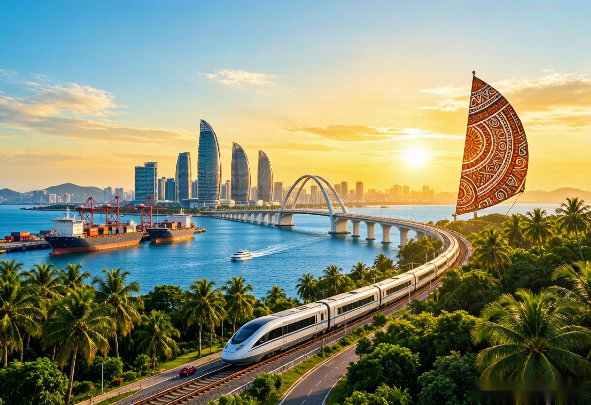

感恩每一位支持者Gratitude to every supporter
致谢Acknowledgments

🏛️ 主办单位🏛️ Host
衷心感谢 海南省东方市人民政府 对本次"东方初芯 AI 原生内容创作大赛"的大力支持。正是有了主办方的精心组织与推动，才让 AI 创作者们有了展示才华的舞台，也让海南本土文化得以通过 AI 技术走向更广阔的天地。
Our heartfelt gratitude to the Dongfang City People's Government of Hainan Province for their strong support of this "Dongfang Chuxin AI-native Content Creation Contest". Thanks to the organizers' meticulous planning and promotion, AI creators have a platform to showcase their talents, and Hainan's local culture can reach a wider audience through AI technology.
👩🏫 赛事老师与工作人员👩🏫 Contest Teachers & Staff
诚挚感谢本次赛事的 所有老师和工作人员。从赛事筹备到评审环节，你们的辛勤付出确保了比赛的公平公正与顺利进行。感谢你们的耐心指导与默默奉献，让每一位参赛者都能在比赛中不断成长。
Sincere thanks to all the teachers and staff of this contest. From preparation to evaluation, your hard work ensured fairness and smooth operation. Thank you for your patient guidance and dedicated support, helping every contestant grow through this journey.
🌴 寄语海南🌴 Wishes for Hainan
作为一名海南学子，我深深热爱这片土地。海南自贸港的建设正在加速推进，海南文化也在走向世界。希望 海南自贸港 建设越来越好，让世界看到海南的魅力；希望 海南文化 在新时代焕发新的光彩，黎锦、琼剧、南洋文化等瑰宝被更多人了解和喜爱。
As a student from Hainan, I have a deep love for this land. The construction of the Hainan Free Trade Port is accelerating, and Hainan's culture is reaching the world. May the Hainan Free Trade Port thrive and prosper, showcasing Hainan's charm to the world. May Hainan's culture shine with new brilliance in the new era — may Li brocade, Qiong opera, Nanyang heritage and other treasures be cherished by more people.